FROM THE EARLY DAYS OF COMPUTING, when symbol tables allowed programmers to progress from using numeric addresses in machine language to using symbolic names in assembly language, to modern applications of the new millennium, when symbolic names have meaning across worldwide computer networks, fast search algorithms have played and continue to play an essential role in computation. Modern applications for symbol tables include organization of scientific data, from searching for markers or patterns in genomic data to mapping the universe; organization of knowledge on the web, from searching in online commerce to putting libraries online; and implementing the internet infrastructure, from routing packets among machines on the web to shared file systems and video streaming. Efficient search algorithms have enabled these and countless other important applications. We will consider several representative examples in this section:
• A dictionary client and an indexing client that enable fast and flexible access to information in comma-separated-value files (and similar formats), which are widely used to store data on the web
• An indexing client for building an inverted index of a set of files
• A sparse-matrix data type that uses a symbol table to address problem sizes far beyond what is possible with the standard implementation
In CHAPTER 6, we consider a symbol table that is appropriate for tables such as databases and file systems that contain a vast number of keys, as large as can be reasonably contemplated.
Symbol tables also play a critical role in algorithms that we consider throughout the rest of the book. For example, we use symbol tables to represent graphs (CHAPTER 4) and to process strings (CHAPTER 5).
As we have seen throughout this chapter, developing symbol-table implementations that can guarantee fast performance for all operations is certainly a challenging task. On the other hand, the implementations that we have considered are well-studied, widely used, and available in many software environments (including Java libraries). From this point forward, you certainly should consider the symbol-table abstraction to be a key component in your programmer’s toolbox.
The table at the bottom of this page summarizes the performance characteristics of the algorithms that we have considered in propositions and properties in this chapter (with the exception of the worst-case results for hashing, which are from the research literature and unlikely to be experienced in practice). It is clear from the table that, for typical applications, your decision comes down to a choice between hash tables and binary search trees.
The advantages of hashing over BST implementations are that the code is simpler and search times are optimal (constant), if the keys are of a standard type or are sufficiently simple that we can be confident of developing an efficient hash function for them that (approximately) satisfies the uniform hashing assumption. The advantages of BSTs over hashing are that they are based on a simpler abstract interface (no hash function need be designed); red-black BSTs can provide guaranteed worst-case performance; and they support a wider range of operations (such as rank, select, sort, and range search). As a rule of thumb, most programmers will use hashing except when one or more of these factors is important, when red-black BSTs are called for. In CHAPTER 5, we will study one exception to this rule of thumb: when keys are long strings, we can build data structures that are even more flexible than red-black BSTs and even faster than hashing.
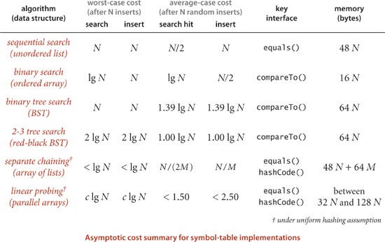
Our symbol-table implementations are useful for a wide range of applications, but our algorithms are easily adapted to support several other options that are widely used and worth considering.
Suppose that we have a symbol table with integer keys and associated floating-point numbers. When we use our standard setup, the keys and values are stored as Integer and Double wrapper-type values, so we need two extra memory references to access each key-value pair. These references may be no problem in an application that involves thousands of searches on thousands of keys but may represent excessive cost in an application that involves billions of searches on millions of keys. Using a primitive type instead of Key would save one reference per key-value pair. When the associated value is also primitive, we can eliminate another reference. The situation is diagrammed at right for separate chaining; the same tradeoffs hold for other implementations. For performance-critical applications, it is worthwhile and not difficult to develop versions of our implementations along these lines (see EXERCISE 3.5.4).
The possibility of duplicate keys sometimes needs special consideration in symbol-table implementations. In many applications, it is desirable to associate multiple values with the same key. For example, in a transaction-processing system, numerous transactions may have the same customer key value. Our convention to disallow duplicate keys amounts to leaving duplicate-key management to the client. We will consider an example of such a client later in this section. In many of our implementations, we could consider the alternative of leaving key-value pairs with duplicate keys in the primary search data structure and to return any value with the given key for a search. We might also add methods to return all values with the given key. Our BST and hashing implementations are not difficult to adapt to keep duplicate keys within the data structure; doing so for red-black BSTs is just slightly more challenging (see EXERCISE 3.5.9 and EXERCISE 3.5.10). Such implementations are common in the literature (including earlier editions of this book).
Java’s java.util.TreeMap and java.util.HashMap libraries are symbol-table implementations based on red-black BSTs and hashing with separate chaining respectively. TreeMap does not directly support rank(), select(), and other operations in our ordered symbol-table API, but it does support operations that enable efficient implementation of these. HashMap is roughly equivalent to our LinearProbingST implementation—it uses array resizing to enforce a load factor of about 75 percent.
TO BE CONSISTENT AND SPECIFIC, we use in this book the symbol-table implementation based on red-black BSTs from SECTION 3.3 or the one based on linear-probing hashing from SECTION 3.4. For economy and to emphasize client independence from specific implementations, we use the name ST as shorthand for RedBlackBST for ordered symbol tables in client code and the name HashST as shorthand for LinearProbingHashST when order is not important and hash functions are available. We adopt these conventions with full knowledge that specific applications might have demands that could call for some variation or extension of one of these algorithms and data structures. Which symbol table should you use? Whatever you decide, test your choice to be sure that it is delivering the performance that you expect.
Some symbol-table clients do not need the values, just the ability to insert keys into a table and to test whether a key is in the table. Because we disallow duplicate keys, these operations correspond to the following API where we are just interested in the set of keys in the table, not any associated values:
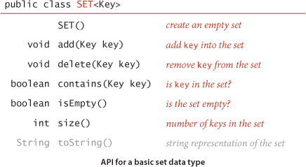
You can turn any symbol-table implementation into a SET implementation by ignoring values or by using a simple wrapper class (see EXERCISES 3.5.1 through 3.5.3).
Extending SET to include union, intersection, complement, and other common mathematical set operations requires a more sophisticated API (for example, the complement operation requires some mechanism for specifying a universe of all possible keys) and provides a number of interesting algorithmic challenges, as discussed in EXERCISE 3.5.17.
As with ST, we have unordered and ordered versions of SET. If keys are Comparable, we can include min(), max(), floor(), ceiling(), deleteMin(), deleteMax(), rank(), select(), and the two-argument versions of size() and get() to define a full API for ordered keys. To match our ST conventions, we use the name SET in client code for ordered sets and the name HashSET when order is not important.
To illustrate uses of SET, we consider filter clients that read a sequence of strings from standard input and write some of them to standard output. Such clients have their origin in early systems where main memory was far too small to hold all the data, and they are still relevant today, when we write programs that take their input from the web. As example input, we use tinyTale.txt (see page 371). For readability, we preserve newlines from the input to the output in examples, even though the code does not do so.
The prototypical filter example is a SET or HashSET client that removes duplicates in the input stream. It is customary to refer to this operation as dedup. We maintain a set of the string keys seen so far. If the next key is in the set, ignore it; if it is not in the set, add it to the set and print it. The keys appear on standard output in the order they appear on standard input, with duplicates removed. This process takes space proportional to the number of distinct keys in the input stream (which is typically far smaller than the total number of keys).
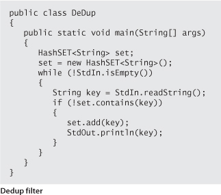
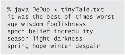
Another classic filter uses keys in a separate file to decide which keys from the input stream are passed to the output stream. This general process has many natural applications. The simplest example is a whitelist, where any key that is in the file is identified as “good.” The client might choose to pass through to standard output any key that is not in the whitelist and to ignore any key that is in the whitelist (as in the example considered in our first program in CHAPTER 1); another client might choose to pass through to standard output any key that is in the whitelist and to ignore any key that is not in the whitelist (as shown in the HashSET client WhiteFilter at right). For example, your email application might use such a filter to allow you to specify the addresses of your friends and to direct it to consider emails from anyone else as spam. We build a HashSET of the keys in the specified list, then read the keys from standard input. If the next key is in the set, print it; if it is not in the set, ignore it. A blacklist is the opposite, where any key that is in the file is identified as “bad.” Again, there are two natural filters for clients using a blacklist. In our email example, you might specify the addresses of known spammers and direct the email application to let through all mail not from one of those addresses. We can implement a HashSET client BlackFilter that implements this filter by negating the filter test in WhiteFilter. Typical practical situations such as a credit card company using a blacklist to filter out stolen card numbers or an internet router using a whitelist to implement a firewall are likely to involve huge lists, unbounded input streams, and strict response requirements. The sorts of symbol-table implementations that we have considered enable such challenges to easily be met.
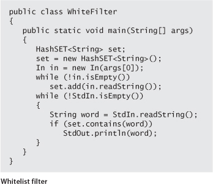
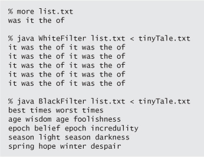
The most basic kind of symbol-table client builds a symbol table with successive put operations in order to support get requests. Many applications also take advantage of the idea that a symbol table is a dynamic dictionary, where it is easy to look up information and to update the information in the table. The following list of familiar examples illustrates the utility of this approach:
• Phone book. When keys are people’s names and values are their phone numbers, a symbol table models a phone book. A very significant difference from a printed phone book is that we can add new names or change existing phone numbers. We could also use the phone number as the key and the name as the value—if you have never done so, try typing your phone number (with area code) into the search field in your browser.
• Dictionary. Associating a word with its definition is a familiar concept that gives us the name “dictionary.” For centuries people kept printed dictionaries in their homes and offices in order to check the definitions and spellings (values) of words (keys). Now, because of good symbol-table implementations, people expect built-in spell checkers and immediate access to word definitions on their computers.
• Account information. People who own stock now regularly check the current price on the web. Several services on the web associate a ticker symbol (key) with the current price (value), usually along with a great deal of other information. Commercial applications of this sort abound, including financial institutions associating account information with a name or account number or educational institutions associating grades with a student name or identification number.
• Genomics. Symbols play a central role in modern genomics. The simplest example is the use of the letters A, C, T, and G to represent the nucleotides found in the DNA of living organisms. The next simplest is the correspondence between codons (nucleotide triplets) and amino acids (TTA corresponds to leucine, TCT to serine, and so forth), then the correspondence between sequences of amino acids and proteins, and so forth. Researchers in genomics routinely use various types of symbol tables to organize this knowledge.
• Experimental data. From astrophysics to zoology, modern scientists are awash in experimental data, and organizing and efficiently accessing this data are vital to understanding what it means. Symbol tables are a critical starting point, and advanced data structures and algorithms that are based on symbol tables are now an important part of scientific research.
• Compilers. One of the earliest uses of symbol tables was to organize information for programming. At first, programs were simply sequences of numbers, but programmers very quickly found that using symbolic names for operations and memory locations (variable names) was far more convenient. Associating the names with the numbers requires a symbol table. As the size of programs grew, the cost of the symbol-table operations became a bottleneck in program development time, which led to the development of data structures and algorithms like the ones we consider in this chapter.
• File systems. We use symbol tables regularly to organize data on computer systems. Perhaps the most prominent example is the file system, where we associate a file name (key) with the location of its contents (value). Your music player uses the same system to associate song titles (keys) with the location of the music itself (value).
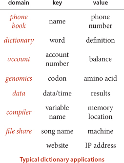
• Internet DNS. The domain name system (DNS) that is the basis for organizing information on the internet associates URLs (keys) that humans understand (such as www.princeton.edu or www.wikipedia.org) with IP addresses (values) that computer network routers understand (such as 208.216.181.15 or 207.142.131.206). This system is the next-generation “phone book.” Thus, humans can use names that are easy to remember and machines can efficiently process the numbers. The number of symbol-table lookups done each second for this purpose on internet routers around the world is huge, so performance is of obvious importance. Millions of new computers and other devices are put onto the internet each year, so these symbol tables on internet routers need to be dynamic.
Despite its scope, this list is still just a representative sample, intended to give you a flavor of the scope of applicability of the symbol-table abstraction. Whenever you specify something by name, there is a symbol table at work. Your computer’s file system or the web might do the work for you, but there is still a symbol table there somewhere.
As a specific example, we consider a symbol-table client that you can use to look up information that is kept in a table on a file or a web page using the comma-separated-value (.csv) file format. This simple format achieves the (admittedly modest) goal of keeping tabular data in a form that anyone can read (and is likely to be able to read in the future) without needing to use a particular application: the data is in text form, one row per line, with entries separated by commas. You can find on the booksite numerous .csv files that are related to various applications that we have described, including amino.csv (codon-to-amino-acid encodings), DJIA.csv (opening price, volume, and closing price of the Dow Jones Industrial Average, for every day in its history), ip.csv (a selection of entries from the DNS database), and upc.csv (the Uniform Product Code bar codes that are widely used to identify consumer products). Spreadsheet and other data-processing applications programs can read and write .csv files, and our example illustrates that you can also write a Java program to process the data any way that you would like.
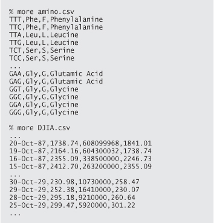
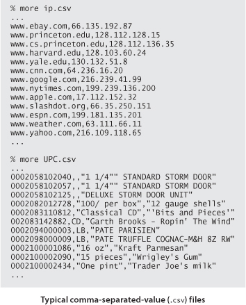
LookupCSV (on the facing page) builds a set of key-value pairs from a file of comma-separated values as specified on the command line and then prints out values corresponding to keys read from standard input. The command-line arguments are the file name and two integers, one specifying the field to serve as the key and the other specifying the field to serve as the value.
The purpose of this example is to illustrate the utility and flexibility of the symbol-table abstraction. What website has IP address 128.112.136.35? (www.cs.princeton.edu) What amino acid corresponds to the codon TCA? (Serine) What was the DJIA on October 29, 1929? (252.38) What product has UPC 0002100001086? (Kraft Parmesan) You can easily look up the answers to questions like these with LookupCSV and the appropriate .csv files.
Performance is not much of an issue when handling interactive queries (since your computer can look through millions of things in the time it takes to type a query), so fast implementations of ST are not noticeable when you use LookupCSV. However, when a program is doing the lookups (and a huge number of them), performance matters. For example, an internet router might need to look up millions of IP addresses per second. In this book, we have already seen the need for good performance with FrequencyCounter, and we will see several other examples in this section.
Examples of similar but more sophisticated test clients for .csv files are described in the exercises. For instance, we could make the dictionary dynamic by also allowing standard-input commands to change the value associated with a key, or we could allow range searching, or we could build multiple dictionaries for the same file.
Dictionaries are characterized by the idea that there is one value associated with each key, so the direct use of our ST data type, which is based on the associative-array abstraction that assigns one value to each key, is appropriate. Each account number uniquely identifies a customer, each UPC uniquely identifies a product, and so forth. In general, of course, there may be multiple values associated with a given key. For example, in our amino.csv example, each codon identifies one amino acid, but each amino acid is associated with a list of codons, as in the example aminoI.csv at right, where each line contains an amino acid and the list of codons associated with it. We use the term index to describe symbol tables that associate multiple values with each key. Here are some more examples:
• Commercial transactions. One way for a company that maintains customer accounts to keep track of a day’s transactions is to keep an index of the day’s transactions. The key is the account number; the value is the list of occurrences of that account number in the transaction list.
• Web search. When you type a keyword and get a list of websites containing that keyword, you are using an index created by your web search engine. There is one value (the set of pages) associated with each key (the query), although the reality is a bit more complicated because we often specify multiple keys.
• Movies and performers. The file movies.txt on the booksite (excerpted below) is taken from the Internet Movie Database (IMDB). Each line has a movie name (the key), followed by a list of performers in that movie (the value), separated by slashes.
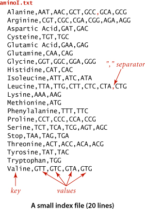
We can easily build an index by putting the values to be associated with each key into a single data structure (a Queue, say) and then associating that key with that data structure as value. Extending LookupCSV along these lines is straightforward, but we leave that as an exercise (see EXERCISE 3.5.12) and consider instead LookupIndex on page 499, which uses a symbol table to build an index from files like aminoI.txt and movies.txt (where the separator character need not be a comma, as in a .csv file, but can be specified on the command line). After building the index, LookupIndex then takes key queries and prints the values associated with each key. More interesting, LookupIndex also builds an inverted index associated with each file, where values and keys switch roles. In the amino acid example, this gives the same functionality as Lookup (find the amino acid associated with a given codon); in the movie-performer example it adds the ability to find the movies associated with any given performer, which is implicit in the data but would be difficult to produce without a symbol table. Study this example carefully, as it provides good insight into the essential nature of symbol tables.
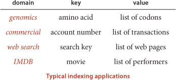
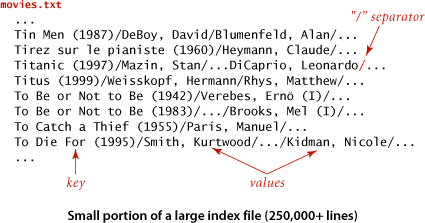
The term inverted index is normally applied to a situation where values are used to locate keys. We have a large amount of data and want to know where certain keys of interest occur. This application is another prototypical example of a symbol-table client that uses an intermixed sequence of calls to get() and put(). Again, we associate each key with a SET of locations, where the occurrences of the key can be found. The nature and use of the location depend on the application: in a book, a location might be a page number; in a program, a location might be a line number; in genomics, a location might be a position in a genetic sequence; and so forth:
• Internet Movie DataBase (IMDB). In the example just considered, the input is an index that associates each movie with a list of performers. The inverted index associates each performer with a list of movies.
• Book index. Every textbook has an index where you look up a term and get the page numbers containing that term. While creating a good index generally involves work by the book author to eliminate common and irrelevant words, a document preparation system will certainly use a symbol table to help automate the process. An interesting special case is known as a concordance, which associates each word in a text with the set of positions in the text where that word occurs (see EXERCISE 3.5.20).
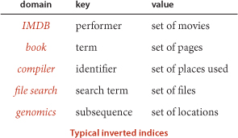
• Compiler. In a large program that uses a large number of symbols, it is useful to know where each name is used. Historically, an explicit printed symbol table was one of the most important tools used by programmers to keep track of where symbols are used in their programs. In modern systems, symbol tables are the basis of software tools that programmers use to manage names.
• File search. Modern operating systems provide you with the ability to type a term and to learn the names of files containing that term. The key is the term; the value is the set of files containing that term.
• Genomics. In a typical (if oversimplified) scenario in genomics research, a scientist wants to know the positions of a given genetic sequence in an existing genome or set of genomes. Existence or proximity of certain sequences may be of scientific significance. The starting point for such research is an index like a concordance, but modified to take into account the fact that genomes are not separated into words (see EXERCISE 3.5.15).
FileIndex (on the facing page) takes file names from the command line and uses a symbol table to build an inverted index associating every word in any of the files with a SET of file names where the word can be found, then takes keyword queries from standard input, and produces its associated list of files. This process is similar to that used by familiar software tools for searching the web or for searching for information on your computer; you type a keyword to get a list of places where that keyword occurs. Developers of such tools typically embellish the process by paying careful attention to
• The form of the query
• The set of files/pages that are indexed
• The order in which files are listed in the response
For example, you are certainly used to typing queries that contain multiple keywords to a web search engine (which is based on indexing a large fraction of the pages on the web) that provides answers in order of relevance or importance (to you or to an advertiser). The exercises at the end of this section address some of these embellishments. We will consider various algorithmic issues related to web search later, but the symbol table is certainly at the heart of the process.
As with LookupIndex, you are certainly encouraged to download FileIndex from the booksite and use it to index some text files on your computer or some websites of interest, to gain further appreciation for the utility of symbol tables. If you do so, you will find that it can build large indices for huge files with little delay, because each put operation and get request is taken care of immediately. Providing this immediate response for huge dynamic tables is one of the classic triumphs of algorithmic technology.

This symbol-table client indexes a set of files. We search for each word in each file in a symbol table, maintaining a SET of file names that contain the word. Names for In can also refer to web pages, so this code can also be used to build an inverted index of web pages.
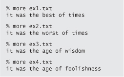
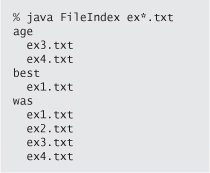
Our next example illustrates the importance of symbol tables in scientific and mathematical calculations. We describe a fundamental and familiar calculation that becomes a bottleneck in typical practical applications, then show how using a symbol table can remove the bottleneck and enable solution of vastly larger problems. Indeed, this particular calculation was at the core of the PageRank algorithm that was developed by S. Brin and L. Page and led to the emergence of Google in the early 2000s (and is a well-known mathematical abstraction that is useful in many other contexts).
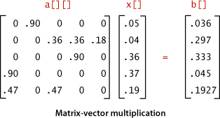
The basic calculation that we consider is matrix-vector multiplication: given a matrix and a vector, compute a result vector whose ith entry is the dot product of the given vector and the ith row of the matrix. For simplicity, we consider the case when the matrix is square with N rows and N columns and the vectors are of size N. This operation is elementary to code in Java, requiring time proportional to N2, for the N multiplications to compute each of the N entries in the result vector, which also matches the space proportional to N2 that is required to store the matrix.
In practice, it is very often the case that N is huge. For example, in the Google application cited above, N is the number of pages on the web. At the time PageRank was developed, that was in the tens or hundreds of billions and it has skyrocketed since, so the value of N2 would be far more than 1020. No one can afford that much time or space, so a better algorithm is needed.
Fortunately, it is also often the case that the matrix is sparse: a huge number of its entries are 0. Indeed, for the Google application, the average number of nonzero entries per row is a small constant: virtually all web pages have links to only a few others (not all the pages on the web). Accordingly, we can represent the matrix as an array of sparse vectors, using a SparseVector implementation like the HashST client on the facing page. Instead of using the code a[i][j] to refer to the element in row i and column j, we use a[i].put(j, val) to set a value in the matrix and a[i].get(j) to retrieve a value. As you can see from the code below, matrix-vector multiplication using this class is even simpler than with the array representation (and it more clearly describes the computation). More important, it only requires time proportional to N plus the number of nonzero elements in the matrix.
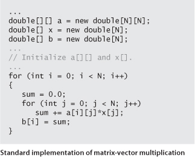
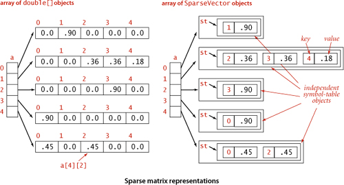
For small matrices or matrices that are not sparse, the overhead for maintaining symbol tables can be substantial, but it is worth your while to be sure to understand the ramifications of using symbol tables for huge sparse matrices. To fix ideas, consider a huge application (like the one faced by Brin and Page) where N is 10 billion or 100 billion, but the average number of nonzero elements per row is less than 10. For such an application, using symbol tables speeds up matrix-vector multiplication by a factor of a billion or more. The elementary nature of this application should not detract from its importance: programmers who do not take advantage of the potential to save time and space in this way severely limit their potential to solve practical problems, while programmers who do take factor-of-a-billion speedups when they are available are likely to be able to address problems that could not otherwise be contemplated.
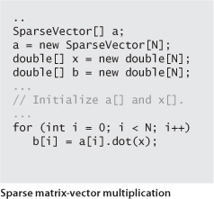
Building the matrix for the Google application is a graph-processing application (and a symbol-table client!), albeit for a huge sparse matrix. Given the matrix, the Page-Rank calculation is nothing more than doing a matrix-vector multiplication, replacing the source vector with the result vector, and iterating the process until it converges (as guaranteed by fundamental theorems in probability theory). Thus, the use of a class like SparseVector can improve the time and space usage for this application by a factor of 10 billion or 100 billion or more.
Similar savings are possible in many scientific calculations, so sparse vectors and matrices are widely used and typically incorporated into specialized systems for scientific computing. When working with huge vectors and matrices, it is wise to run simple performance tests to be sure that the kinds of performance gains that we have illustrated here are not being missed. On the other hand, array processing for primitive types of data is built in to most programming languages, so using arrays for vectors that are not sparse, as we did in this example, may offer further speedups. Developing a good understanding of the underlying costs and making the appropriate implementation decisions is certainly worthwhile for such applications.
SYMBOL TABLES ARE A PRIMARY CONTRIBUTION OF ALGORITHMIC TECHNOLOGY to the development of our modern computational infrastructure because of their ability to deliver savings on a huge scale in a vast array of practical applications, making the difference between providing solutions to a wide range of problems and not being able to address them at all. Few fields of science or engineering involve studying the effects of an invention that improves costs by factors of 100 billion—symbol-table applications put us in just that position, as we have just seen in several examples, and these improvements have had profound effects. The data structures and algorithms that we have considered are certainly not the final word: they were all developed in just a few decades, and their properties are not fully understood. Because of their importance, symbol-table implementations continue to be studied intensely by researchers around the world, and we can look forward to new developments on many fronts as the scale and scope of the applications they address continue to expand.
Q. Can a SET contain null?
A. No. As with symbol tables, keys are non-null objects.
Q. Can a SET be null?
A. No. A SET can be empty (contain no objects), but not null. As with any Java data type, a variable of type SET can have the value null, but that just indicates that it does not reference any SET. The result of using new to create a SET is always an object that is not null.
Q. If all my data is in memory, there is no real reason to use a filter, right?
A. Right. Filtering really shines in the case when you have no idea how much data to expect. Otherwise, it may be a useful way of thinking, but not a cure-all.
Q. I have data in a spreadsheet. Can I develop something like LookupCSV to search through it?
A. Your spreadsheet application probably has an option to export to a .csv file, so you can use LookupCSV directly.
Q. Why would I need FileIndex? Doesn’t my operating system solve this problem?
A. If you are using an OS that meets your needs, continue to do so, by all means. As with many of our programs, FileIndex is intended to show you the basic underlying mechanisms of such applications and to suggest possibilities to you.
Q. Why not have the dot() method in SparseVector take a SparseVector object as argument and return a SparseVector object?
A. That is a fine alternate design and a nice programming exercise that requires code that is a bit more intricate than for our design (see EXERCISE 3.5.16). For general matrix processing, it might be worthwhile to also add a SparseMatrix type.
3.5.1 Implement SET and HashSET as “wrapper class” clients of ST and HashST, respectively (provide dummy values and ignore them).
3.5.2 Develop a SET implementation SequentialSearchSET by starting with the code for SequentialSearchST and eliminating all of the code involving values.
3.5.3 Develop a SET implementation BinarySearchSET by starting with the code for BinarySearchST and eliminating all of the code involving values.
3.5.4 Develop classes HashSTint and HashSTdouble for maintaining sets of keys of primitive int and double types, respectively. (Convert generics to primitive types in the code of LinearProbingHashST.)
3.5.5 Develop classes STint and STdouble for maintaining ordered symbol tables where keys are primitive int and double types, respectively. (Convert generics to primitive types in the code of RedBlackBST.) Test your solution with a version of SparseVector as a client.
3.5.6 Develop classes HashSETint and HashSETdouble for maintaining sets of keys of primitive int and double types, respectively. (Eliminate code involving values in your solution to EXERCISE 3.5.4.)
3.5.7 Develop classes SETint and SETdouble for maintaining ordered sets of keys of primitive int and double types, respectively. (Eliminate code involving values in your solution to EXERCISE 3.5.5.)
3.5.8 Modify LinearProbingHashST to keep duplicate keys in the table. Return any value associated with the given key for get(), and remove all items in the table that have keys equal to the given key for delete().
3.5.9 Modify BST to keep duplicate keys in the tree. Return any value associated with the given key for get(), and remove all nodes in the tree that have keys equal to the given key for delete().
3.5.10 Modify RedBlackBST to keep duplicate keys in the tree. Return any value associated with the given key for get(), and remove all nodes in the tree that have keys equal to the given key for delete().
3.5.11 Develop a MultiSET class that is like SET, but allows equal keys and thus implements a mathematical multiset.
3.5.12 Modify LookupCSV to associate with each key all values that appear in a key-value pair with that key in the input (not just the most recent, as in the associative-array abstraction).
3.5.13 Modify LookupCSV to make a program RangeLookupCSV that takes two key values from the standard input and prints all key-value pairs in the .csv file such that the key falls within the range specified.
3.5.14 Develop and test a static method invert() that takes as argument an ST<String, Bag<String>> and produces as return value the inverse of the given symbol table (a symbol table of the same type).
3.5.15 Write a program that takes a string on standard input and an integer k as command-line argument and puts on standard output a sorted list of the k-grams found in the string, each followed by its index in the string.
3.5.16 Add a method sum() to SparseVector that takes a SparseVector as argument and returns a SparseVector that is the term-by-term sum of this vector and the argument vector. Note: You need delete() (and special attention to precision) to handle the case where an entry becomes 0.
3.5.17 Mathematical sets. Your goal is to develop an implementation of the following API MathSET for processing (mutable) mathematical sets:
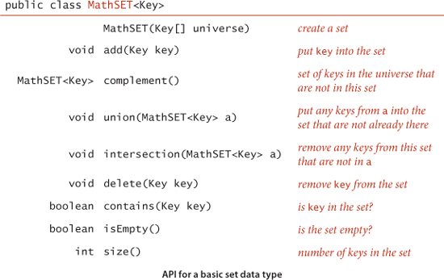
Use a symbol table. Extra credit: Represent sets with arrays of boolean values.
3.5.18 Multisets. After referring to EXERCISES 3.5.2 and 3.5.3 and the previous exercise, develop APIs MultiHashSET and MultiSET for multisets (sets that can have equal keys) and implementations SeparateChainingMultiSET and BinarySearchMultiSET for multisets and ordered multisets, respectively.
3.5.19 Equal keys in symbol tables. Consider the API MultiST (unordered or ordered) to be the same as our symbol-table APIs defined on page 363 and page 366, but with equal keys allowed, so that the semantics of get() is to return any value associated with the given key, and we add a new method
Iterable<Value> getAll(Key key)
that returns all values associated with the given key. Using our code for SeparateChainingST and BinarySearchST as a starting point, develop implementations SeparateChainingMultiST and BinarySearchMultiST for these APIs.
3.5.20 Concordance. Write an ST client Concordance that puts on standard output a concordance of the strings in the standard input stream (see page 498).
3.5.21 Inverted concordance. Write a program InvertedConcordance that takes a concordance on standard input and puts the original string on standard output stream. Note: This computation is associated with a famous story having to do with the Dead Sea Scrolls. The team that discovered the original tablets enforced a secrecy rule that essentially resulted in their making public only a concordance. After a while, other researchers figured out how to invert the concordance, and the full text was eventually made public.
3.5.22 Fully indexed CSV. Implement an ST client FullLookupCSV that builds an array of ST objects (one for each field), with a test client that allows the user to specify the key and value fields in each query.
3.5.23 Sparse matrices. Develop an API and an implementation for sparse 2D matrices. Support matrix addition and matrix multiplication. Include constructors for row and column vectors.
3.5.24 Non-overlapping interval search. Given a list of non-overlapping intervals of items, write a function that takes an item as argument and determines in which, if any, interval that item lies. For example, if the items are integers and the intervals are 1643-2033, 5532-7643, 8999-10332, 5666653-5669321, then the query point 9122 lies in the third interval and 8122 lies in no interval.
3.5.25 Registrar scheduling. The registrar at a prominent northeastern University recently scheduled an instructor to teach two different classes at the same exact time. Help the registrar prevent future mistakes by describing a method to check for such conflicts. For simplicity, assume all classes run for 50 minutes starting at 9:00, 10:00, 11:00, 1:00, 2:00, or 3:00.
3.5.26 LRU cache. Create a data structure that supports the following operations: access and remove. The access operation inserts the item onto the data structure if it’s not already present. The remove operation deletes and returns the item that was least recently accessed. Hint: Maintain the items in order of access in a doubly linked list, along with pointers to the first and last nodes. Use a symbol table with keys = items, values = location in linked list. When you access an element, delete it from the linked list and reinsert it at the beginning. When you remove an element, delete it from the end and remove it from the symbol table.
3.5.27 List. Develop an implementation of the following API:
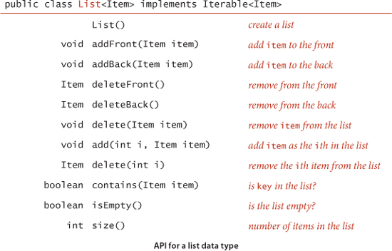
Hint: Use two symbol tables, one to find the ith item in the list efficiently, and the other to efficiently search by item. (Java’s java.util.List interface contains methods like these but does not supply any implementation that efficiently supports all operations.)
3.5.28 UniQueue. Create a data type that is a queue, except that an element may only be inserted the queue once. Use an existence symbol table to keep track of all elements that have ever been inserted and ignore requests to re-insert such items.
3.5.29 Symbol table with random access. Create a data type that supports inserting a key-value pair, searching for a key and returning the associated value, and deleting and returning a random key. Hint: Combine a symbol table and a randomized queue.
3.5.30 Duplicates (revisited). Redo EXERCISE 2.5.31 using the Dedup filter given on page 490. Compare the running times of the two approaches. Then use Dedup to run the experiments for N = 107, 108, and 109, repeat the experiments for random long values and discuss the results.
3.5.31 Spell checker. With the file dictionary.txt from the booksite as command-line argument, the BlackFilter client described on page 491 prints all misspelled words in a text file taken from standard input. Compare the performance of RedBlackBST, SeparateChainingHashST, and LinearProbingHashST for the file WarAndPeace.txt (available on the booksite) with this client and discuss the results.
3.5.32 Dictionary. Study the performance of a client like LookupCSV in a scenario where performance matters. Specifically, design a query-generation scenario instead of taking commands from standard input, and run performance tests for large inputs and large numbers of queries.
3.5.33 Indexing. Study a client like LookupIndex in a scenario where performance matters. Specifically, design a query-generation scenario instead of taking commands from standard input, and run performance tests for large inputs and large numbers of queries.
3.5.34 Sparse vector. Run experiments to compare the performance of matrix-vector multiplication using SparseVector to the standard implementation using arrays.
3.5.35 Primitive types. Evaluate the utility of using primitive types for Integer and Double values, for LinearProbingHashST and RedBlackBST. How much space and time are saved, for large numbers of searches in large tables?